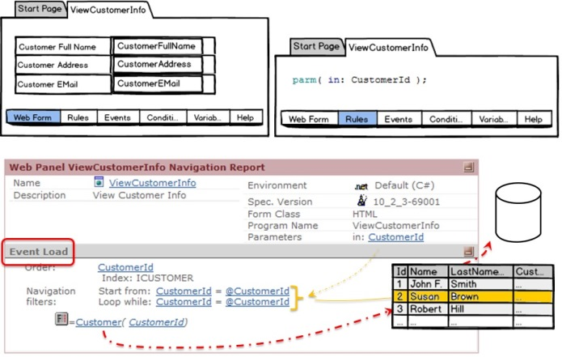
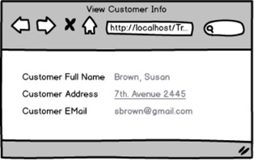
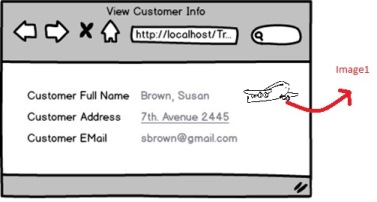
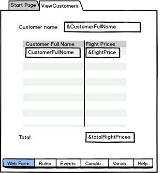
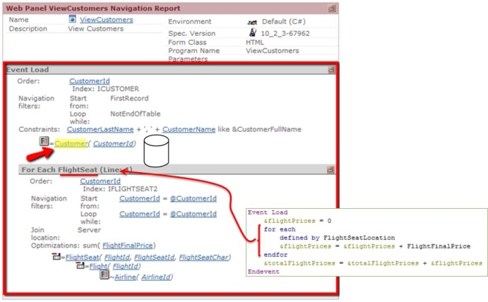
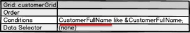
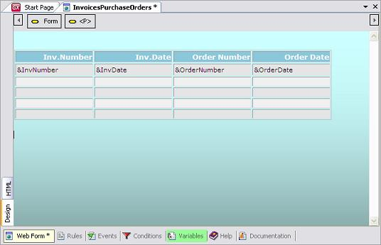

Load event
This system event is executed immediately after the Refresh event. Its behavior depends on the interface (Web, SD), on whether there is a grid in the form or not, and if there is an associated Base Table. However, it always relates to loading the information on the form (the plain part in the case of a web panel and no grid, or otherwise the grid). It is often used to load variable values on the grid. The values of these variables may be calculated through assignments or by reading the database using the For Each command. SyntaxEvent Load Where: Event_code is the code that will be executed (on the Server) whenever the event is triggered. An error will occur if we try to code the Load event having more than one grid in the form. The general Load event (meaning that it is not linked to a specific grid control, as gridName.Load event) is allowed only in the case of one grid at the most. In Smart Devices, the Load event will only be executed if there is a grid (not based on an SDT), at the time of loading it. Additionally, in Web, if the panel is plain (with no grid), the Load event will relate to the load of that plain information (unlike Smart Devices, where Refresh event plays that role). The difference is that, while in Web, in all cases there is, regardless of the existence of a grid, one related table (base table in the case of attributes) at the most, in SD there will be necessarily two of them (one for the fixed part and one for the grid). Web panel
Smart Devices
If the Web panel or the SD grid has an associated base table and a For Each command (X Evolution 2) is used inside the Load event code, then this For Each will be considered as nested regarding the implicit one (the Load event performs an implicit For Each operation over the Base Table), having a join, control break or cartesian product, as it is the case with nested For Eachs. In the Event_code we may use any of the extended table attributes corresponding to the Load base table, without the need for writing a For Each (since it is implicit!). In the case of Base table, the total number of executions for this event depends on the total number of grid records to be loaded. And also, the records may be loaded upon the user's request. To such effects, we have the Rows property in the grid. When it is set to 10, 10 records are loaded each time (that is known as automatic paging). Examples1. A plain Web Panel shows some customer information (customer received by parameter). Note the attributes in the form. The Navigation Report shows the Load event is implicitly navigating the Customer table, and an automatic filter by CustomerId is achieved (since receiving in CustomerId parameter).  Suppose this Web panel is invoked from another object, with 2 as the parameter value. Then, the information of CustomerId 2 will be displayed:  When we must show an image on the screen indicating whether the customer has many associated flights (each flight seat has a CustomerId), we insert that image, (called Image1) on the form:  and make it visible when applicable (e.g. customer has more than 10 flights):
Event Load
&total = 0
for each defined by FlightSetLocation
&total += 1
endfor
if &total >10
Image1.Visible = True
else
Image1.Visible = False
endif
EndEvent
Note the explicit For Each is nested to the implicit (Customer) one. 2. A web panel with a grid showing all customers and the total prices of all flights where the passenger has a reserved seat.  We have inserted the &flightPrice variable on the grid to calculate what was necessary for each customer. Note the CustomerFullName attribute is determining the grid has a base table. And it is Customer. So, every time a line (customer) is loaded on the grid, we must calculate the corresponding variable value:
Event Load
&flightPrices = 0
for each defined by FlightSeatLocation
&flightPrices = &flightPrices + FlightFinalPrice
endfor
&totalFlightPrices = &totalFlightPrices + &flightPrices //in order to summarize prices for all clients loaded on the grid
EndEvent
Note the for each is nested to the implicit one (for this reason we did not have to specify the filter by CustomerId). This is how the navigation listing informs that the web panel has a base table (Customer):  This will cause the Load event to be executed for each customer in this table. Since the Load has a For each, we need to navigate its base table, which the navigation report indicates is the one with flight seats, retrieving the records corresponding to that customer, which will be loaded on the grid at that particular moment. Note the Constraints for a customer to be loaded into the grid. This is because the developer specified the following condition for the grid:  3. Similarly, in a Smart Device application, we have to load a variable on the grid depending on whether a real estate property had more than a certain number of visits or not, in order to classify it as one of the most visited. Additionally, if the property was listed during the last couple of days, we want to display an image indicating that it is a new property.
To do so, see the Load example. 4. We have two transactions: Invoice and Order:
Invoice
{
InvoiceNumber*
InvoiceDate
}
Order
{
OrderNumber*
OrderDate
}
We want to design a Web Panel object with a grid that includes information from orders in some lines, and information from invoices in other lines. This is not possible in a straightforward manner because we cannot define different types of grid lines (one line displays Invoice attributes and the one below it displays Order attributes, etc.) The solution is to define a Web Panel without a Base Table, define grid lines made up of variables, and handle the loading of these variables using the Load event together with the Load command. To build a Web Panel without a base table we must make sure that there are no attributes mentioned in the Web Form or Events (except those included in For Each command (X Evolution 2)s and Conditions). Panel Lastly, we must declare the following Load event:
Event Load
For each
&InvoiceNumber = InvoiceNumber
&InvoiceDate = InvoiceDate
...
Load
EndFor
For each
&OrderNumber = OrderNumber
&OrderDate = OrderDate
...
Load
EndFor
EndEvent
The Load command forces the load of the current For Each line into the Grid. It is used only in special cases like this. This is not a regular use for the Load event. In this case, there is no implicit For Each since there is no Base Table defined. All the loading must be done "manually" (using explicit commands) and all at once, instead of using the default loading. Scope
See AlsoRefresh event Videos |